Spiritueux & dégustation · Namur
L'Alambic
Ici, tout se goûte avant de s'acheter.
Whiskies, rhums, gins et liqueurs du sol au plafond, chacun avec son étiquette au goulot : devant, le prix de la bouteille ; derrière, le prix du centilitre. On goûte au comptoir, on choisit ensuite.
Dégustation au centilitreMasterclass en petit comitéConseil pour offrir
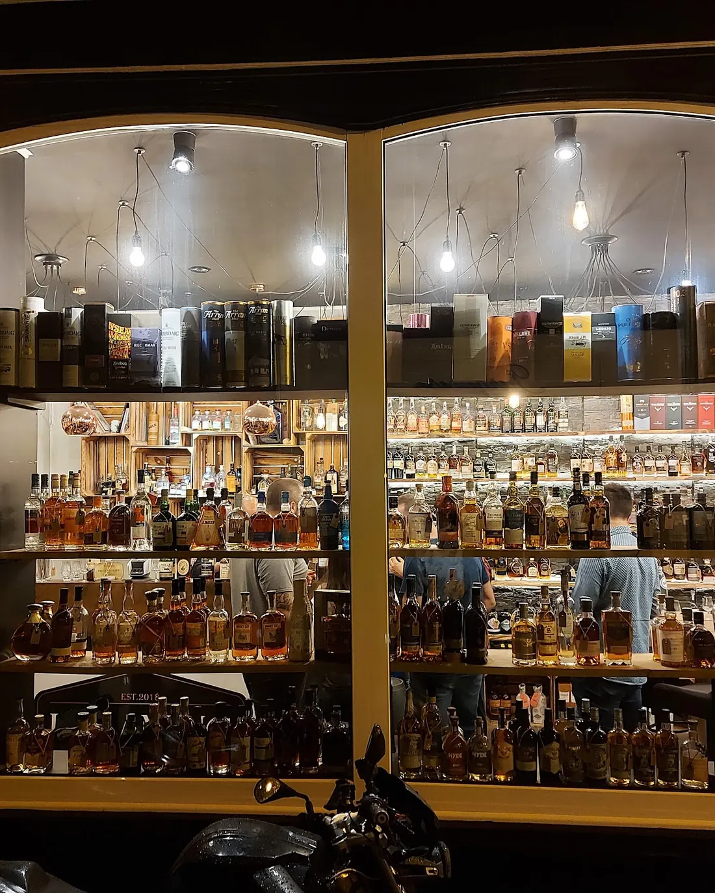
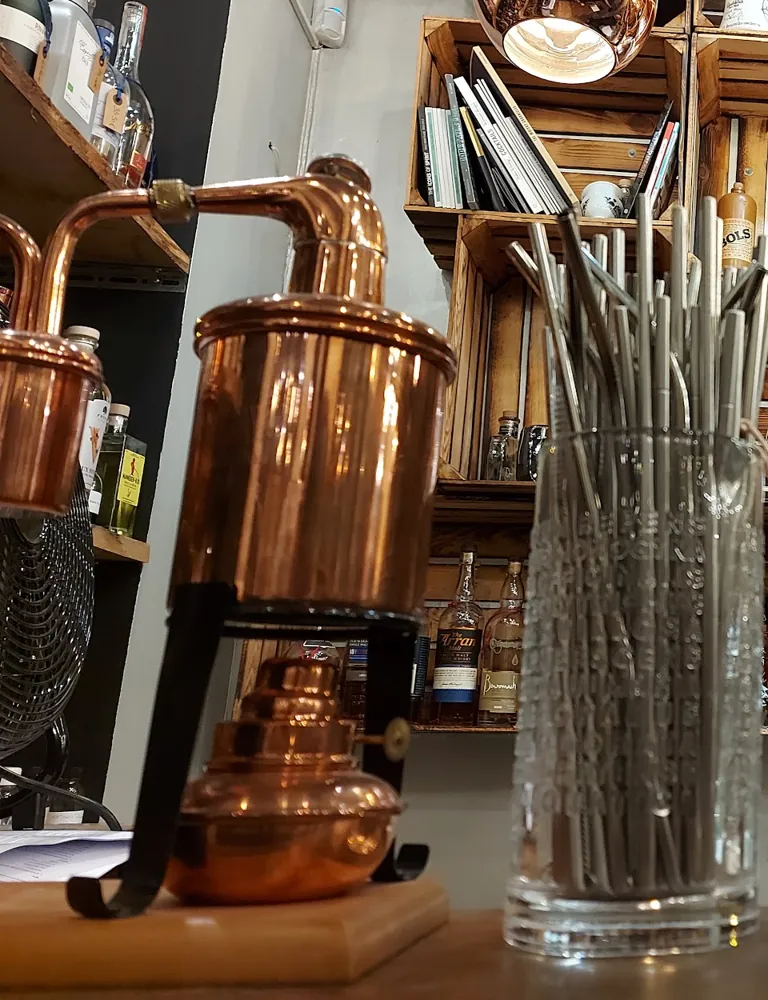
L'alambic du comptoir- Whisky
- Rhum
- Gin
- Bourbon
- Cognac
- Mezcal
- Tequila
- Vodka
- Liqueur
- Eau-de-vie
- Bitter
- Pastis
La dégustation
Tout se déguste à la ficelle.
Même le flacon rare, même celui qu'on n'aurait jamais osé acheter à l'aveugle. Une étiquette en carton nouée au goulot, deux prix, et un comptoir pour goûter.
- Repérez une bouteille
Sur les étagères, presque tout est ouvert ou à ouvrir.
- Retournez l'étiquette
Devant, le prix du flacon. Au dos, le prix du centilitre en dégustation.
- Goûtez, puis décidez
Au comptoir, sans surprise sur l'addition. La bouteille repart avec vous, ou pas.
Au dos de l'étiquette du prix de la bouteille se trouve le prix du cl en dégustation. Pas de surprise.Denis F., avis Google 4 étoiles
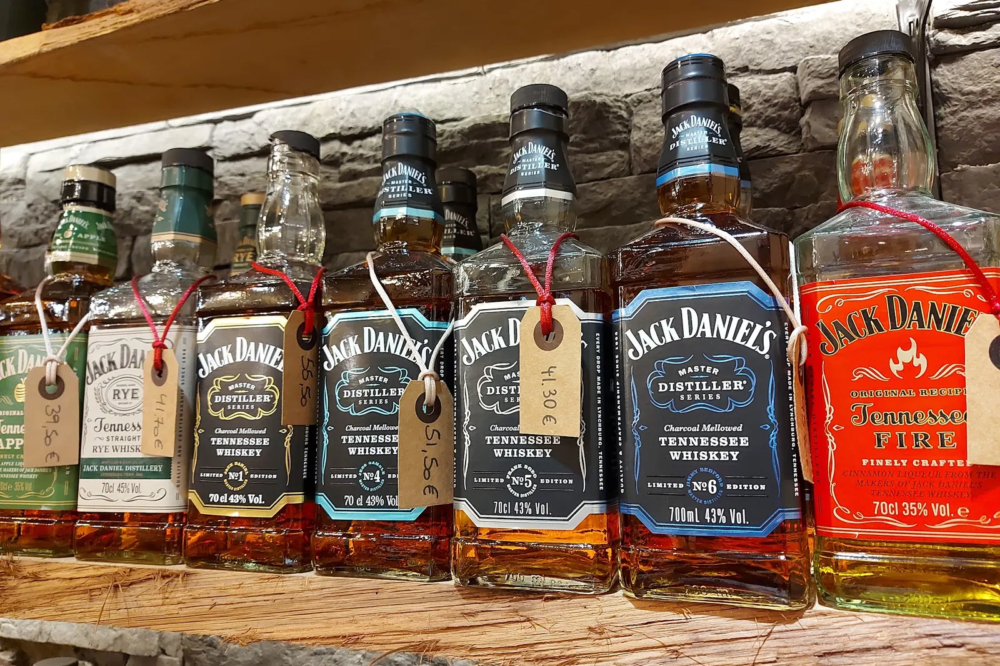
« Nous ne sommes que deux en Belgique à proposer la dégustation à la ficelle de tous les produits […], même des flacons à 250 €. » · La DH, 2018
Les étagères
Du single malt anglais au rhum de Guyane.
Une sélection faite sans attache aux marques, pour celui qui découvre comme pour le collectionneur. Et ce qui n'est pas en rayon, la maison peut « plus que probablement » vous le procurer.
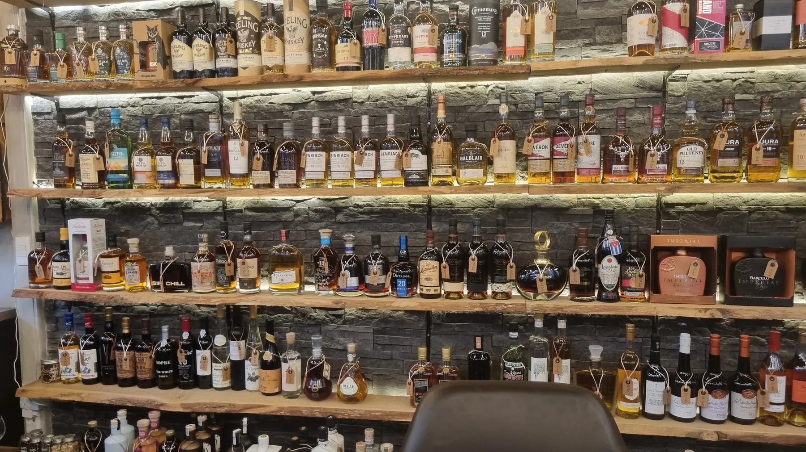
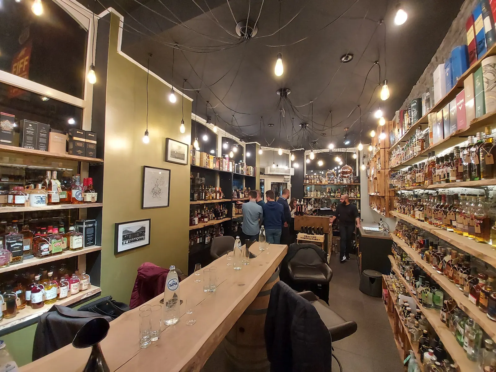
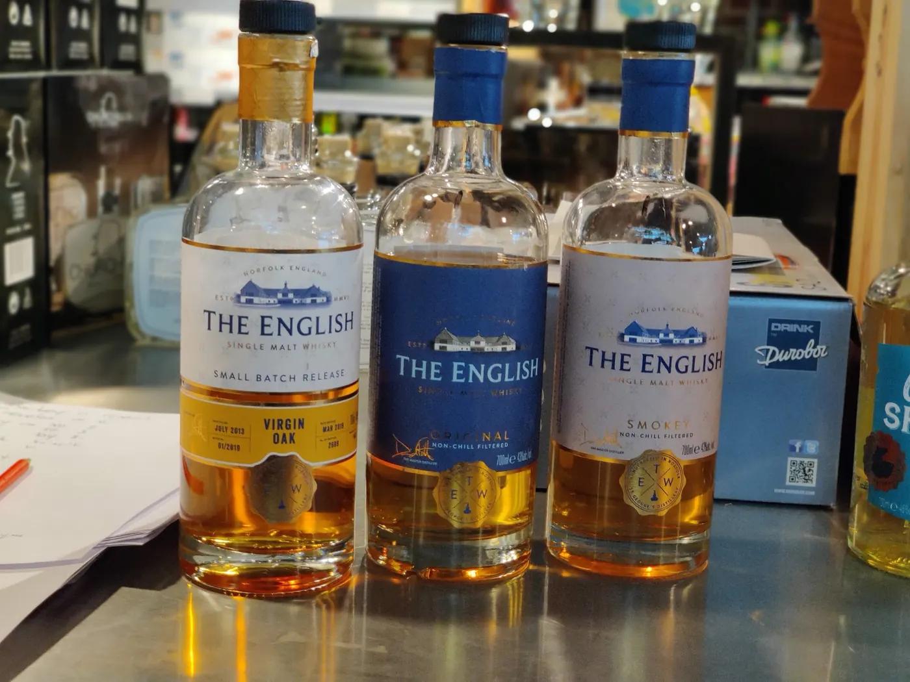
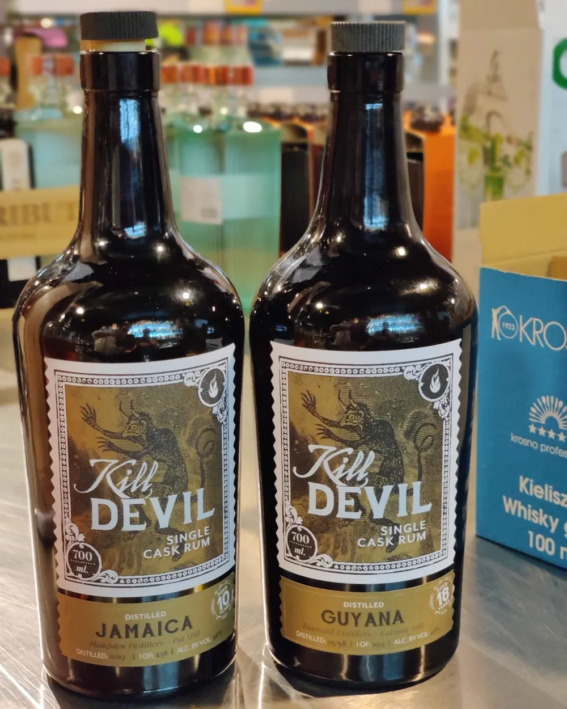
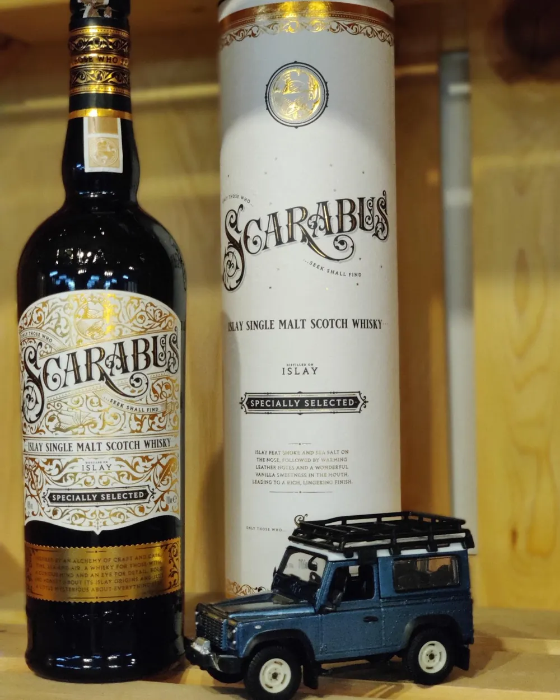
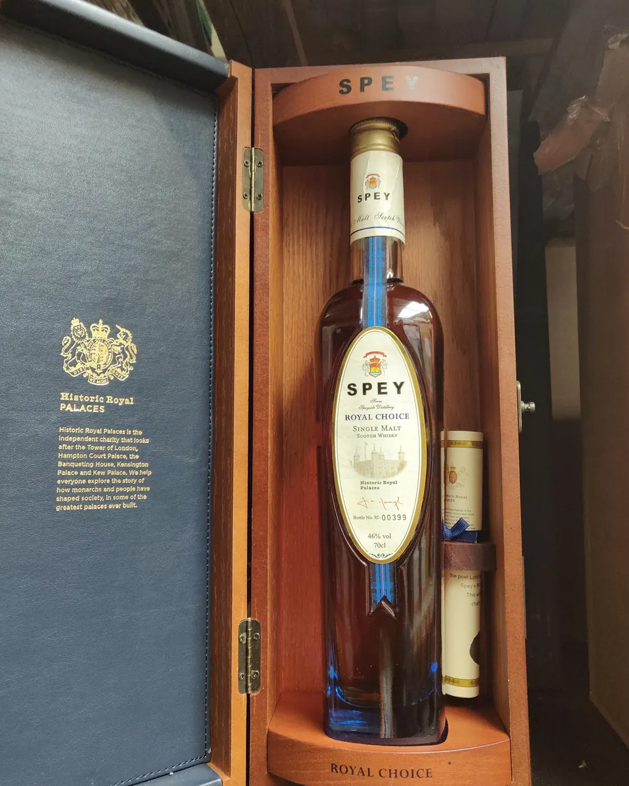
références de spiritueux, ou presque, sur les étagères à l'ouverture.
La DH, décembre 2018de la sélection introuvable en grande distribution.
La DH, décembre 2018« une bonne dizaine de références considérées comme des collectors ».
La DH, décembre 2018« de très beaux flacons […] mais aussi les déguster avant de les acheter ».
Denis F., sur GoogleSur la carte
Du gin de Namur au rhum au Biétrumé.
Un extrait de la carte que L'Alambic publiait pour la commande en ligne : les flacons d'ici en tête, puis les grands rhums, gins et whiskies.
Namur et la Wallonie
Distillés à deux pas, ou presque.
- Le Gin de Namur36,30 €50 cl · 40 % vol.
- Le Gin de Namur Melon39,80 €50 cl · 40 % vol.
- Le Rhum au Biétrumé de Namur44,20 €50 cl · 40 % vol.
- Maredsous Elixir des Moines27,20 €50 cl · 32 % vol.
- Maredsous Honey Malt Liqueur36,60 €50 cl · 32 % vol.
- Maredsous Valéo37,50 €50 cl · 40 % vol.
- Eau de Villée, Biercée37,60 €70 cl · 40 % vol.
- B By B, Biercée Bitter28,50 €70 cl · 20 % vol.
Les rhums
De la Barbade à la Guadeloupe.
- Plantation 3 Stars24,90 €70 cl · 41 % vol.
- Plantation Original Dark25,80 €70 cl · 40 % vol.
- Karukera, Rhum Vieux Agricole44,50 €70 cl · 42 % vol.
- Abuelo 12 ans48,50 €70 cl · 40 % vol.
- Diplomático Reserva Exclusiva49,70 €70 cl · 40 % vol.
- Mount Gay Black Barrel50,00 €70 cl · 43 % vol.
- Mount Gay XO65,80 €70 cl · 43 % vol.
Gins, whiskies & bourbons
Londres, le Japon, le Kentucky, l'Écosse.
- Sipsmith Dry Gin49,80 €70 cl · 42 % vol.
- Nikka Gin52,40 €70 cl · 47 % vol.
- Satao Gin43,50 €50 cl · 45 % vol.
- Lord of Barbes48,30 €50 cl · 50 % vol.
- Monkey Shoulder36,70 €70 cl · 40 % vol.
- Monkey Shoulder Peat45,40 €70 cl · 40 % vol.
- Maker's Mark40,70 €70 cl · 45 % vol.
- Woodford Reserve Double Oaked62,90 €70 cl · 43 % vol.
Prix et références relevés sur la page de commande en ligne de L'Alambic (mars 2025). Ils ont pu changer depuis : l'étiquette en boutique fait foi, et la sélection en rayon est bien plus large.
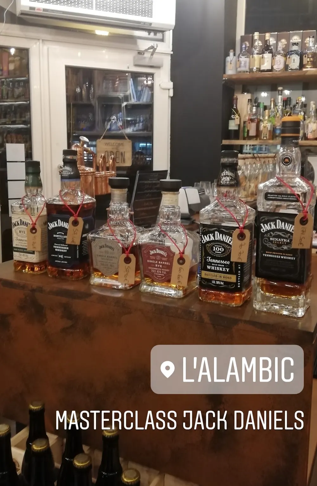
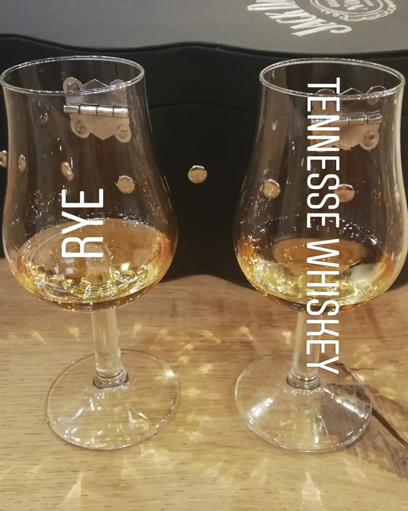
Masterclass et initiations
Une maison, deux heures, quelques verres alignés.
- Deux heures autour d'une maison, d'un terroir ou d'une gamme de produits.
- En petit comité, pour poser toutes ses questions.
- Sur réservation : les dates sont annoncées par la boutique.
Cela fait plusieurs fois que je me rend dans ce magasin pour des initiations, masterclass.Charlotte B., avis Google 5 étoiles
Mais il ne faut pas tarder car les places sont limitées.Denis F., avis Google 4 étoiles
Format des masterclass : Philippe Briers, à La DH (2018).
Avant de passer
Dites ce que vous cherchez, le comptoir est prêt.
Un cadeau à trouver, une bouteille à goûter, un flacon à mettre de côté ou à faire venir : choisissez le jour et l'heure, et dites ce que vous aimez.
Du mardi au samedi, de 10 h 30 à 18 hPlutôt par téléphone ? 0460 96 72 09
Ils l'ont écrit sur Google
« Le patron connait très très bien ses produits. »
Horaires et accès
Une devanture noire aux moulures blanches.
Du mardi au samedi
Du mardi au samedi. Fermé le dimanche et le lundi.
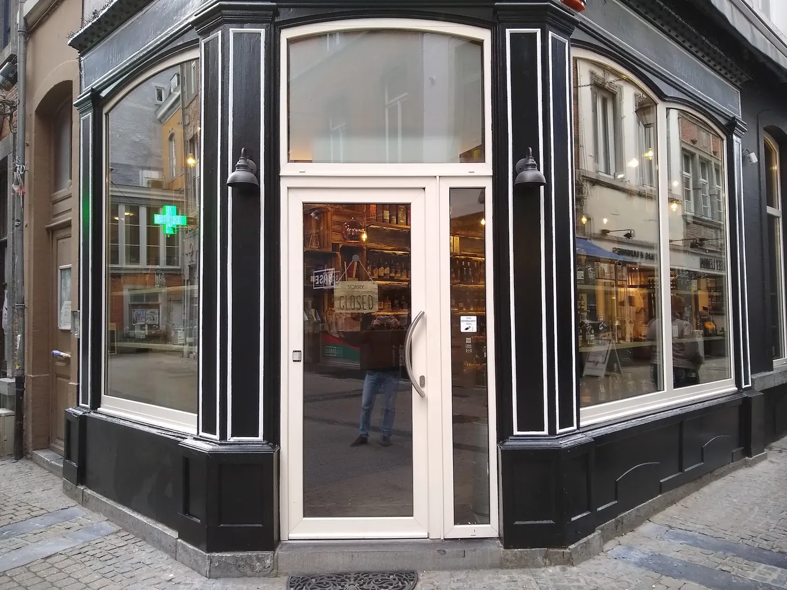